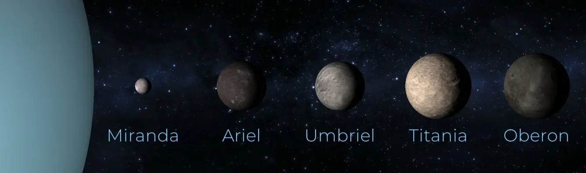
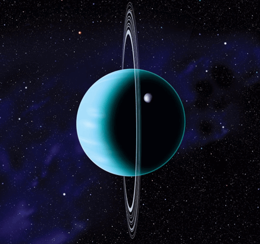

Structure
| Layer | Composition |
|---|---|
| Atmosphere | Gaseous hydrogen, helium and methane |
| Mantle | Water, ammonia and methane ices |
| Core | Silicate / iron-nickel rock |
Atmosphere
Uranus' cyan color is due to the absorption of red light by
atmospheric methane.
The gaseous atmosphere gradually transitions into the internal
liquid layers.
Core
The ice mantle is not in fact composed of ice in the conventional
sense, but of a hot and dense fluid, also called a water ammonia
ocean.
A relatively large magnetic field is generated by convection
currents at shallow depths within the planet.
Moons

Uranus has 27 moons, with Miranda being the largest and most interesting due to its varied surface features. The other moons, including Ariel, Umbriel, Titania, and Oberon, are mostly composed of ice and rock and have been studied by spacecraft such as Voyager 2.
Noticeable point

The ring system of Uranus consists of narrow and faint rings made of dark dust particles and ice chunks. They are younger than the rings of other gas giants and may have been formed from a collision with a moon or comet. The rings are still not well understood and require further study.